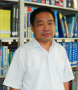

李永化教授，男，1960年出生，博士，博士生导师，辽宁师范大学城市与环境学院院长、中国第四纪科学教育与普及委员会副主任、中国地理学会会员、辽宁省地理学会理事、大连市优秀专家、大连日报社高级顾问。在第四纪泥石流活动期与气候期的阶段性耦合、青藏高原东缘和邻区晚新生代泥石流活动规律及其成因方面取得了比较丰富的研究成果，得到了国内外同行的认可与好评。环境考古方面的研究，在全新世环境演变以及史前考古等方面也有一定的造诣，系统论述了东北及辽西地区环境变化对考古文化的影响，对东北地区文化传承的非线性现象提供了环境方面的解释，成一家之言。承担中日合作项目2项，“九·五”国家科技攻关项目1项、国家自然科学基金1项、省自然科学基金项目2项，参与基金项目和横向合作项目10余项。曾荣获辽宁省政府科技进步一等奖1项、辽宁省政府科技进步二等奖1项，发表论文40余篇，出版专著2部。